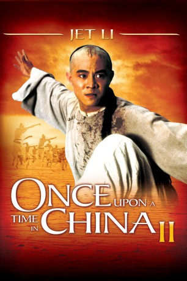

#7690 Once Upon a Time in China 2
Alternativ: Es war einmal in China 2 (Originaltitel)
 
 IMDB-Wertung: 7.5 / 10
IMDB-Wertung: 7.5 / 10  Metascore: 0
Metascore: 0 
In the sequel to the Tsui Hark classic, Wong Fei-Hung faces The White Lotus society, a fanatical cult seeking to drive the Europeans out of China through violence, even attacking Chinese who follow Western ways. Wong must also defend Dr. Sun Yat Sen, a revolutionary, from the military. With his friends, loved ones, and the future of China itself at stake, Wong must once again use his martial arts skills to defend the innocent.
Jahr: 1992
Dauer: 112 Minuten
FSK: 12
Land: Hong-Kong Studio: Splendid FilmTonspuren:
Untertitel:
Auflösung: 1080p (1920x816) Größe: 6184 MB
Genre: Action, Abenteuer, Liebe, Geschichte, Biographie
Regisseur:  Hark Tsui
Hark Tsui
Drehbuch: Tin-suen Chan
Soundtrack:
Darsteller:
Datei: X:\HD-Eastern-Collections\Once Upon a Time in China\Once Upon a Time in China 2 (1992, FSK12, 1920x816).mkv seit 04.12.2017
Festplatte: HD Eastern+Western
 Alle Filme aus Gruppe 'HD-Eastern-Collections\Once Upon a Time in China'
Alle Filme aus Gruppe 'HD-Eastern-Collections\Once Upon a Time in China'